Step 2: Install the Dash Cam onto the windshield;
A. Install the GPS Mount
- 1.Put the GPS Mount into the connector on the camera;
- 2.Attach the double-sided adhesive tape to the bracket and tear off the protective film;
- 3.Insert the USB plug into the USB port on the mount.
B.Mount the Dash Cam
- 1.If the car's windscreen is tinted with a reflective coating, it may be athermic and affect the GPS reception. In this instance, please mount your device where there is a "clear area". Clean the windshield with water or alcohol, and a lint-free cloth.
- 2. Press the mount firmly onto the windshield, and maintain pressure for 30 seconds. Carefully route the power cable around the windscreen and tuck it under the trim.

C.Connect the Cables
Route the cables through the top ceiling and the A-pillar so that it does not interfere with driving. Connect the car charger to the dash cam and then plug it into the cigarette lighter.
Note:
- 1. The battery will take about 1 hour to be fully charged;
- 2. Fully charged battery can keep the camera recording for about 5-6 minutes. The battery is mainly used to power the "parking monitoring" feature. After the ignition of your car is turned off, if your cigarette lighter port still has power through, please disconnect the USB plug of car charger from the Dash cam, or pull the car charger out of cigarette lighter port to keep your car battery from being drained.